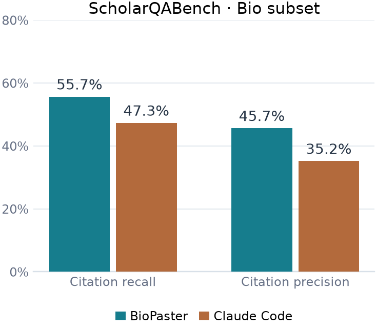

Literature and source evidence
Search papers and websites, retrieve accessible full text, and copy relevant material into evidence files for review.
Open-source biomedical research agent
Run a research agent locally. Connect literature evidence, analysis code, and notebook outputs on your own machine.
Search papers and read source materials.
Inspect files and execute analysis code.
Keep code and results in a notebook.
BioPaster gives local language models tools to work with biomedical research materials. Use natural language in the terminal, then inspect the sources, code, and files behind the answer.
Search papers and websites, retrieve accessible full text, and copy relevant material into evidence files for review.
Inspect workspace data, adapt analysis code, and execute it through configured Jupyter kernels. Review code and outputs in the notebook.
Connect a tool-capable local model through llama.cpp. Local inference avoids cloud model fees per token; hardware and connected services have their own costs.
Load workflow instructions on demand, track task dependencies, resume saved conversations, and connect retrieval services through MCP.
BioPaster and Claude Code were evaluated on 20 biomedical questions from ScholarQABench, both using Bonsai 2 27B. The chart compares citation recall and citation precision.
These results apply to this 20-question evaluation with this model, not to all biomedical research tasks.
Evaluation setup and metric definitions ↗
Install BioPaster, start a tool-capable model server, and connect it in your configuration.
Python 3.12+ is required. These commands use Bash on Linux. Model memory requirements depend on model size, quantization, and context length.
git clone https://github.com/N1yan/BioPaster.git
cd BioPaster
python3.12 -m venv .venv
source .venv/bin/activate
python -m pip install .
biopaster --versionFollow the guides or explore the retrieval examples. Start with a small task whose output you can check.
Download a model, start llama.cpp, and test a tool call.
Model configurationConfigure connections and switch models with /model.
Chroma retrieval exampleConnect a document retrieval service through MCP.
Neo4j knowledge graph exampleExplore graph-backed retrieval for research questions.
BioPaster is an open-source command-line AI agent for biomedical research. It connects language models to literature, local files, code execution, and Jupyter notebooks. It is available as a Python project on GitHub.
Yes. BioPaster has been tested with a local 9B model for streaming, tool calling, and conversation titles. Choose a model with tool-calling support and a server compatible with the Anthropic Messages API. Task quality depends on the model and the problem.
The model can run on your machine without a cloud inference provider. Literature search, downloads, and external MCP services may still use the network. Review which tools and services you enable.
You can inspect retained notebook code and outputs, source evidence files, and saved conversations. Reproducing a result also requires the original input data and a compatible software environment; a notebook alone is not a guarantee.